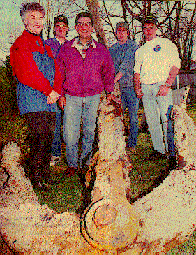

It takes a team effort to pull in a 6,000-pound anchor. Lending a hand were Nina Vickers of Hawthorne Cove Marina in Salem, underwater videographer Stephen Galperin, diver Mehmet Mandalinci, dive boat owner Jeff Hannigan, and diver Michael Miller.
The Salem News / Kirk Williamson
News staff
DANVERS - "A lot of scuba divers bring up artifacts from sunken
ships, but nothing this size," said Faith Ortins of Beverly, co-owner
of Northeast Scuba.
"It's not one of the prettiest things, but
it is one of the biggest," added Michael Miller of Danvers, a diver.
What Miller and three other local divers brought up on Saturday was
a 13-foot, 6,000- pound anchor, encrusted with scale and barnacles, from
the British freighter City of Salisbury, which sank on Graves Ledge, about
14 miles off Nahant, 57 years ago.
The divers hauled the anchor into
Salem Harbor, then trucked it to the Northeast Scuba office on Liberty
Street in Danvers, across from Popes Landing.
The ship, which had
sailed from India, was carrying an unusual cargo, including many exotic
animals - birds, monkeys, pythons and cobras - besides rubber and jute.
To divers, it became known as "the zoo wreck," according
to the book "New England's Legacy of Shipwrecks" by Henry
Keatts.
It had struck an uncharted ledge and run aground, sinking a few feet
onto the pinnacle of rock on which it sat.
The 56-man crew escaped,
but not the animals. When a much decomposed python, washed ashore later,
some suspected it was a sea serpent, according to Keatts' book.
For
several months the ship sat on the ledge in the water, with charter boats
running tourists to "the zoo wreck."
Eventually the ship
broke up, however, and pieces of it were scattered over the ocean floor.
"It's a popular diving site," Miller said, but "the
scattered remains are pretty well pulverized and spread out over a large
area."
It was Jeff Hannigan of Tewksbury, owner of the diving
vessel Depth Charge, who found the anchor nearly 60 feet below the
surface.
He convinced Miller, Stephen Galperin of Marblehead and
Mehmet Mandalinei of Methuen to help him float the anchor to the surface.
Work began Friday.
Using five rubber bags that each provide
1,000 pounds of buoyancy, the divers managed to get the anchor almost, but
not entirely, to the surface.
With the weather turning bad, the divers dropped the anchor back
into the water, but only 35 feet deep this time. Ortins drove to
Providence to pick up another bag, to add another 2,000 pounds of
buoyancy.
The effort was successful Saturday, and the small Depth
Charge towed the floated anchor into Salem Harbor.
The trip out was
only an hour, but it took eight hours to bring the anchor back to shore.
"She's a proud little tug - well, not a tug, but close,"
said Miller.
Ortins noted the 13-foot anchor is one foot longer than
the boat and 2,000 pounds heavier.
It took some time for the boat
and its salvage to make it into the Hawthorne Cove Marina. The boat was
difficult to maneuver as it towed the heavy anchor.
"It was
like a mine field of moorings" coming through the harbor, Miller
said.
But that was "part of the adventure," said Ortins,
who praised the cooperation of everyone involved: Northeast Scuba,
Hawthorne Cove Marina and Riverview Landscape Construction of Middleton.
The last two companies cooperated in getting the anchor to Danvers:
Hawthorne hauled the anchor out of the water and Riverview drove it to
Liberty Street, using a dump truck to tow the anchor on a trailer.
The trip through downtown Salem streets drew some stares Monday
morning, they noted.
"Wreck divers," noted Miller,
"have this strange disease. They like bringing junk home, (although)
not everyone needs an anchor in their back yard."
This
"junk," however, will be put on display. After letting it dry
out, Miller said he would hammer out the scale (loose, flaking rust), then
sandblast it, mostly to "knock off the edges."
Then it
will be painted and preserved, Ortins said, "so everyone else can
look at it."